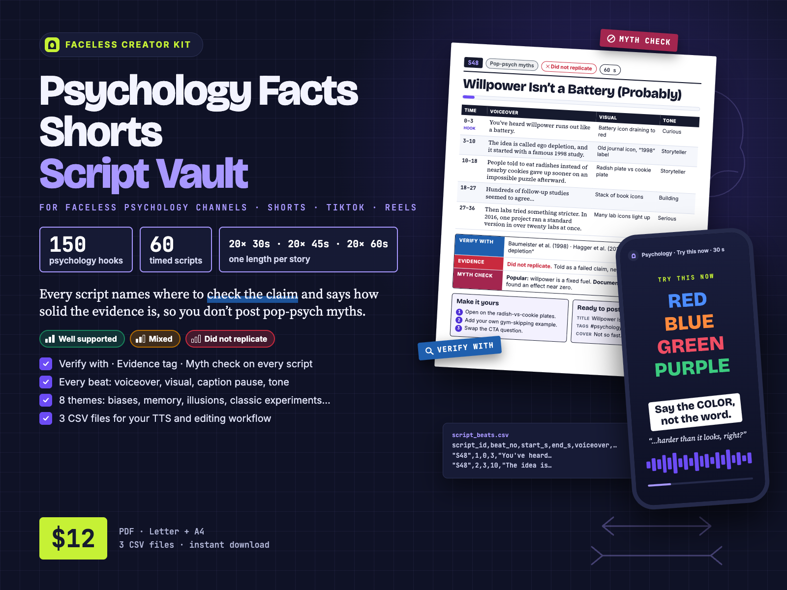
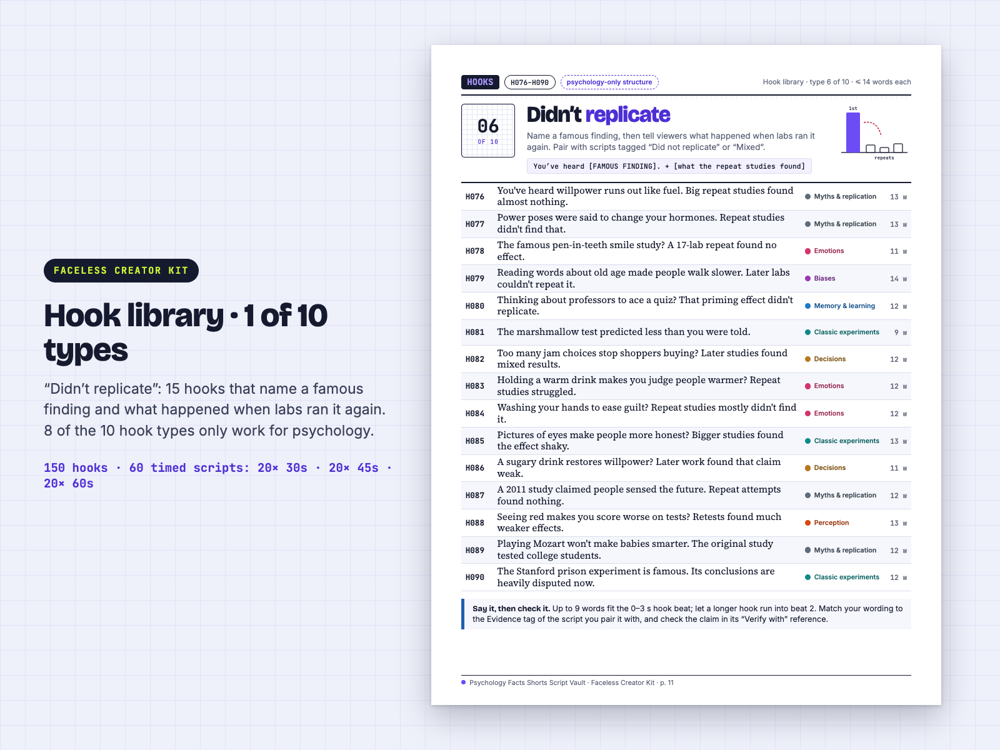
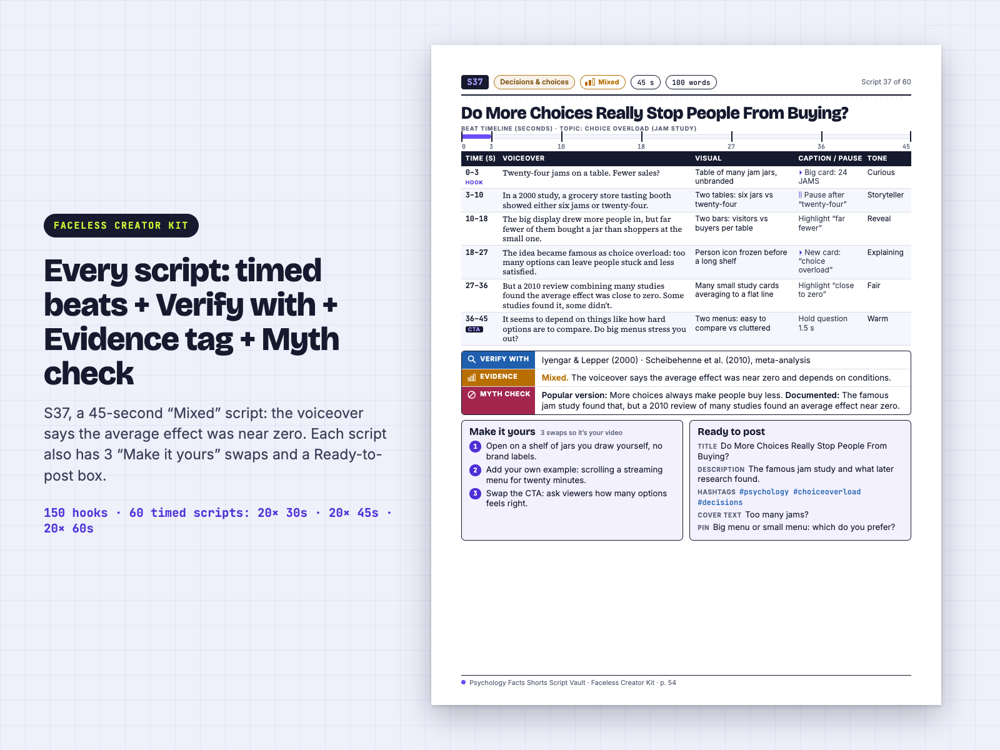
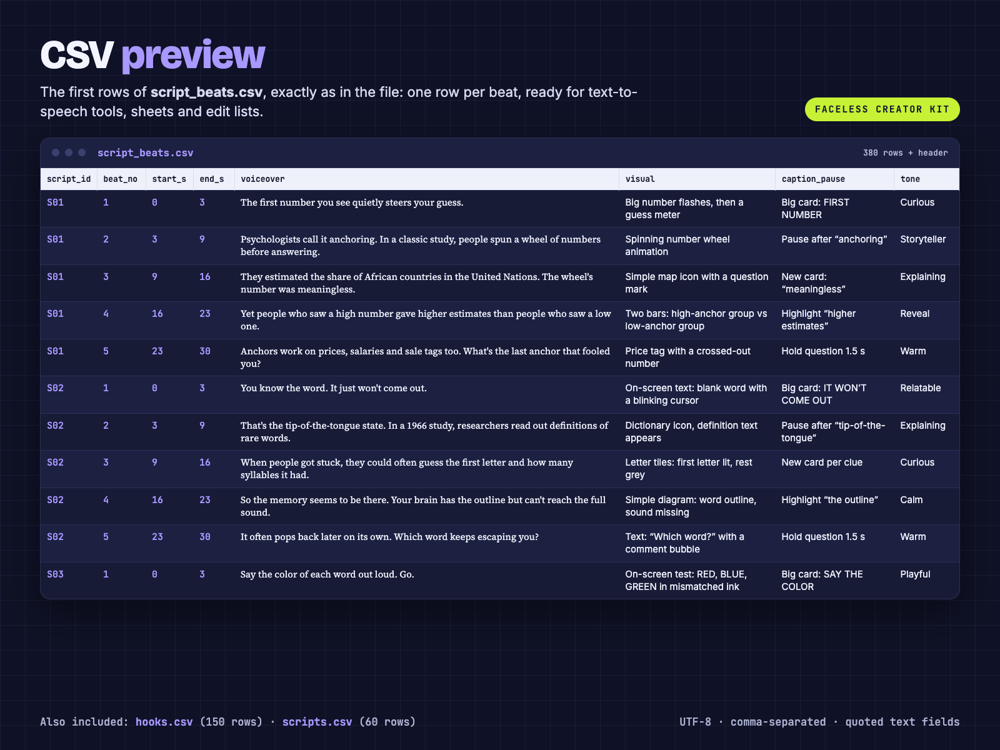

150 psychology hooks + 60 timed Shorts scripts. Every script names where to check it and says how solid the evidence is, so you don't post pop-psych myths.
A psychology-only script library for faceless Shorts, Reels and TikTok, with a “Verify with” reference, an Evidence tag and a “Myth check” line on every script. 80-page PDF (US Letter + A4) + 3 CSV files. From Faceless Creator Kit, the creator-tools imprint of Hustle Studio.

$12.00 USD, $12 one-time, instant download (about $0.20 per script)
Buy now: $12 Free sample first (CSV + full scripts)🔒 Secure checkout: Waffo Pancake is the merchant of record and processes the payment and sales tax. We never see your card details.
🔒 Secure checkout. Payment is handled by Waffo Pancake, our merchant of record, which processes the payment and the sales tax and accepts common debit and credit cards. Waffo sends you the receipt. Right after payment you go straight to the download page.
↩️ 14-day refund, no questions asked. Email chenphien@gmail.com within 14 days of purchase and we refund you in full through Waffo Pancake (see Terms).
✅ Satisfaction guarantee: if the scripts don't work for you, full refund. If the files won't open, the pack doesn't match this page, or the scripts simply don't work for your channel, write to us within 14 days and you get all $12 back.
🛠️ Corrections, not promises. Found a claim that doesn't match its own “Verify with” reference? Send the script ID. We check it, and if the script is wrong we put a corrected version on the same download page, free for every buyer. We don't promise new volumes or sequels; we do commit to fixing errors in this one.
✉️ Who is behind this? Faceless Creator Kit is the small creator-tools imprint of Hustle Studio. It also makes the History Facts and Animal Facts script vaults and the Reddit-Style Story Script Vault in the same format. One email address, answered by the people who made the vault, within 2 business days.
🆕 New shop, honest about it. This vault is new, so it has no reviews yet, and we won't invent any. Instead: below you can read a full hook page, a complete 30-second, 45-second and 60-second script and the PDF's FAQ page as text, word for word from the paid files; you can download free sample CSVs in the exact paid format; every image is a real PDF page or a real view of the CSV; and all 60 script titles are listed.
We are not psychologists, and no outside psychology professional has reviewed the scripts. If you need expert sign-off, this is not that. Here is what we did instead, so you can spot-check quickly:
A fast spot-check routine: start with the 12 Mixed and 7 Did not replicate scripts (the ones most likely to draw comments), look up the named reference, and compare it with the Myth check line. Please check each claim before you post. Educational entertainment, not mental-health advice.



18-second vertical screen recording of the real pages: cover, a hook page, a script page (S48) and the CSV table.
| ID | Hook (say it in 0–3 s) | Theme | Words |
|---|---|---|---|
| H121 | You've heard we only use 10% of our brains. Brain scans disagree. | Pop-psych myths & failed replications | 12 |
| H122 | You've heard you're either left-brained or right-brained. Brain scans don't show it. | Pop-psych myths & failed replications | 12 |
| H123 | You've heard you learn best in your 'learning style.' Tests don't back it. | Pop-psych myths & failed replications | 13 |
| H124 | You've heard humans now have shorter attention spans than goldfish. There's no good source. | Pop-psych myths & failed replications | 14 |
| H125 | You've heard punching a pillow lets your anger out. Studies say it doesn't. | Emotions & everyday mind | 13 |
| H126 | You've heard opposites attract. Research mostly finds similar people pair up. | Emotions & everyday mind | 11 |
| H127 | You've heard listening to classical music makes you smarter. Not quite. | Pop-psych myths & failed replications | 11 |
| H128 | You've heard habits take 21 days. One study found it often took much longer. | Emotions & everyday mind | 14 |
| H129 | You've heard lie detectors catch liars. Scientists say they're not reliable. | Classic experiments & social behaviour | 11 |
| H130 | You've heard eyes looking up-left mean someone's lying. Tests found nothing. | Classic experiments & social behaviour | 11 |
| H131 | You've heard dreams last only a few seconds. Lab studies suggest otherwise. | Sleep & dreams | 12 |
| H132 | You've heard you can learn a language in your sleep. Not really. | Sleep & dreams | 12 |
| H133 | You've heard memory works like a video camera. It doesn't. | Memory & learning | 10 |
| H134 | You've heard sugar makes kids hyper. Blind studies didn't find that. | Emotions & everyday mind | 11 |
| H135 | You've heard the full moon makes people act strange. Data says no. | Emotions & everyday mind | 12 |
S01Cognitive biasesAnchoring effectEvidence: Well supported30 s74 words
| Time (s) | Voiceover | Visual | Caption / pause | Tone |
|---|---|---|---|---|
| 0–3 (hook) | The first number you see quietly steers your guess. | Big number flashes, then a guess meter | Big card: FIRST NUMBER | Curious |
| 3–9 | Psychologists call it anchoring. In a classic study, people spun a wheel of numbers before answering. | Spinning number wheel animation | Pause after “anchoring” | Storyteller |
| 9–16 | They estimated the share of African countries in the United Nations. The wheel's number was meaningless. | Simple map icon with a question mark | New card: “meaningless” | Explaining |
| 16–23 | Yet people who saw a high number gave higher estimates than people who saw a low one. | Two bars: high-anchor group vs low-anchor group | Highlight “higher estimates” | Reveal |
| 23–30 (CTA) | Anchors work on prices, salaries and sale tags too. What's the last anchor that fooled you? | Price tag with a crossed-out number | Hold question 1.5 s | Warm |
Verify with: Tversky & Kahneman (1974) · APA Dictionary of Psychology: “anchoring bias”
Evidence: Well supported
Myth check: No common myth.
Make it yours: 1) Open with a price you saw this week instead of the line. 2) Ask viewers a number question first, then reveal the anchor. 3) Swap the CTA: ask about the last sale that felt like a bargain.
Ready to post: Title: The First Number You Hear Bends Your Guess · Description: Why a random number can change your next guess. · Hashtags: #psychology #anchoring #cognitivebias · Cover text: The number that tricks you · Pin: Comment the last price that anchored you.
S37Decisions & choicesChoice overload (jam study)Evidence: Mixed45 s100 words
| Time (s) | Voiceover | Visual | Caption / pause | Tone |
|---|---|---|---|---|
| 0–3 (hook) | Twenty-four jams on a table. Fewer sales? | Table of many jam jars, unbranded | Big card: 24 JAMS | Curious |
| 3–10 | In a 2000 study, a grocery store tasting booth showed either six jams or twenty-four. | Two tables: six jars vs twenty-four | Pause after “twenty-four” | Storyteller |
| 10–18 | The big display drew more people in, but far fewer of them bought a jar than shoppers at the small one. | Two bars: visitors vs buyers per table | Highlight “far fewer” | Reveal |
| 18–27 | The idea became famous as choice overload: too many options can leave people stuck and less satisfied. | Person icon frozen before a long shelf | New card: “choice overload” | Explaining |
| 27–36 | But a 2010 review combining many studies found the average effect was close to zero. Some studies found it, some didn't. | Many small study cards averaging to a flat line | Highlight “close to zero” | Fair |
| 36–45 (CTA) | It seems to depend on things like how hard options are to compare. Do big menus stress you out? | Two menus: easy to compare vs cluttered | Hold question 1.5 s | Warm |
Verify with: Iyengar & Lepper (2000) · Scheibehenne et al. (2010), meta-analysis
Evidence: Mixed. The voiceover says the average effect was near zero and depends on conditions.
Myth check: Popular version: More choices always make people buy less. Documented: The famous jam study found that, but a 2010 review of many studies found an average effect near zero.
Make it yours: 1) Open on a shelf of jars you draw yourself, no brand labels. 2) Add your own example: scrolling a streaming menu for twenty minutes. 3) Swap the CTA: ask viewers how many options feels right.
Ready to post: Title: Do More Choices Really Stop People From Buying? · Description: The famous jam study and what later research found. · Hashtags: #psychology #choiceoverload #decisions · Cover text: Too many jams? · Pin: Big menu or small menu: which do you prefer?
S48Pop-psych myths & failed replicationsEgo depletionEvidence: Did not replicate60 s126 words
| Time (s) | Voiceover | Visual | Caption / pause | Tone |
|---|---|---|---|---|
| 0–3 (hook) | You've heard willpower runs out like a battery. | Animated battery icon draining to red | Big card: “BATTERY?” | Curious |
| 3–10 | The idea is called ego depletion, and it started with a famous 1998 study. | Old journal icon with a “1998” label | Pause after “ego depletion” | Storyteller |
| 10–18 | People told to eat radishes instead of nearby cookies gave up sooner on an impossible puzzle afterward. | Simple drawing: radish plate vs cookie plate | New card per plate | Storyteller |
| 18–27 | Hundreds of follow-up studies seemed to agree, and the battery idea spread into self-help books and productivity advice. | Stack of book icons growing | New card per clause | Building |
| 27–36 | Then labs tried something stricter. In 2016, one project ran a standard version in over twenty labs at once. | Diagram: many lab icons light up together | Highlight “over twenty labs” | Serious |
| 36–45 | The result? An effect close to zero. A later multi-lab project also found, at most, a very small effect. | Bar chart: tall original bar, tiny repeat bar | Pause after “The result?” | Reveal |
| 45–54 | Feeling tired is real. What didn't hold up is the simple fuel-tank story, and giving up likely has many causes. | Fuel-gauge icon with a question mark | Highlight “didn’t hold up” | Fair |
| 54–60 (CTA) | Do you think willpower runs out? Tell me in the comments. | Battery icon + comment bubble | Hold last card 1.5 s | Warm |
Verify with: Baumeister et al. (1998) · Hagger et al. (2016), multi-lab replication · APA Dictionary of Psychology: “ego depletion”
Evidence: Did not replicate
Myth check: Popular version: Willpower is a fixed fuel that every act of self-control uses up. Documented: A large multi-lab replication found an effect near zero; a later one found at most a very small effect.
Make it yours: 1) Open on the radish-vs-cookie plates instead of the battery. 2) Add your own example: skipping the gym after a long workday. 3) Swap the CTA: ask which brain fact viewers stopped believing.
Ready to post: Title: Willpower Isn't a Battery (Probably) · Description: Why the famous ego-depletion finding is now in doubt. · Hashtags: #psychology #willpower #replication · Cover text: Willpower battery? Not so fast. · Pin: Which psych fact should I check next?
Which themes are covered?
8 themes: Cognitive biases; Memory & learning; Perception & illusions; Classic experiments & social behaviour; Decisions & choices; Emotions & everyday mind; Sleep & dreams; Pop-psych myths & failed replications. Each has at least 7 scripts.
How many hooks are there?
150 hooks: 10 hook types × 15 hooks each (H001–H150). 8 of the 10 types are psychology-only structures (Your brain is lying to There’s a word for that); Myth busted and Would you? complete the set.
What does the Evidence tag mean?
Well supported = repeatedly replicated or textbook consensus. Mixed = a real effect, but smaller, debated or limited to some conditions. Did not replicate = a famous claim that large replication attempts did not confirm. The voiceover wording matches the tag.
What is NOT covered?
Can I add my own hooks?
Yes. hooks.csv is a plain spreadsheet you can extend with your own rows. There is no generator.
Does it batch-generate a week of scripts?
No. It is a library of 60 finished scripts, not a generator or an app. 60 scripts = 2 months at 1 per day, or 3 weeks at 3 per day.
Does the same story come in 30, 45 and 60 s versions?
No. Each story is written at one length only: 20 at 30 s, 20 at 45 s and 20 at 60 s. The longest script is 60 s.
Are the claims guaranteed?
No. We are not psychologists and no outside expert reviewed the scripts. Check each claim against the named “Verify with” reference before posting. Not mental-health advice.
No email or signup. These are real rows copied word for word from the paid files, with the same columns, UTF-8 encoding and quoting:
Using ElevenLabs or another text-to-speech tool? Open free-sample-scripts.csv in Google Sheets or Excel and paste the full_voiceover cell into your TTS tool, or paste each voiceover cell from free-sample-script_beats.csv for beat-by-beat audio. That is the same way the paid CSVs work. They are plain data files: we don't claim a one-click import into any specific app, so test the sample in your own setup before buying.
You can also read a full hook page, three complete scripts and the FAQ page above, as text.
| File | Format | Size / rows |
|---|---|---|
Psychology-Facts-Script-Vault_Letter.pdf | PDF, US Letter | 80 pages |
Psychology-Facts-Script-Vault_A4.pdf | PDF, A4 | 80 pages (same content and page numbers) |
hooks.csv | CSV, UTF-8 | 150 rows + header (hook_id, hook_type, theme, hook_text, word_count) |
scripts.csv | CSV, UTF-8 | 60 rows + header, one per script (topic, Evidence tag, full voiceover, verify_with, myth_check, 3 swaps, post fields, CTA) |
script_beats.csv | CSV, UTF-8 | 380 rows + header, one per beat (start/end seconds, voiceover, visual, caption / pause, tone) |
README.txt | Plain text | File list, CSV import steps for Google Sheets and Excel, license summary, verify-before-posting advice |
Psychology-Facts-Script-Vault.zip | ZIP | All 6 files above in one download |
Inside each PDF: cover, clickable contents (2 pages), How to use, Accuracy, evidence & platform notes, 10 hook pages (one hook type per page, 150 hooks), script index (2 pages), 60 script pages, a 6-step video workflow, FAQ and license. The download page has a separate link for each of the 6 files and for the ZIP, so README.txt is available both on its own and inside the ZIP.
So you can judge the whole vault, not just the previews. Theme in brackets.
S01 The First Number You Hear Bends Your Guess (Cognitive biases) · S02 Why a Word Gets Stuck on the Tip of Your Tongue (Memory & learning) · S03 Say the Color, Not the Word (Perception & illusions) · S04 Pavlov's Dogs and the Bell That Probably Wasn't (Classic experiments & social behaviour) · S05 The Pre-Ticked Box That Decides for You (Decisions & choices) · S06 Why Things Grow on You the More You See Them (Emotions & everyday mind) · S07 Awake but Can't Move? What Sleep Paralysis Is (Sleep & dreams) · S08 Do You Really Use Only 10% of Your Brain? (Pop-psych myths & failed replications) · S09 Nobody Noticed Your Stain as Much as You Think (Cognitive biases) · S10 Why You Forget Things When You Walk Through a Door (Memory & learning) · S11 There's a Hole in Your Vision Right Now (Perception & illusions) · S12 Why Teams Pull Less Than Their Members Do Alone (Classic experiments & social behaviour) · S13 The Menu Option That's There to Steer You (Decisions & choices) · S14 Why One Bad Comment Outweighs Ten Nice Ones (Emotions & everyday mind) · S15 Your Body Runs on a Clock That's Not Quite 24 Hours (Sleep & dreams) · S16 Left-Brained or Right-Brained? Neither (Pop-psych myths & failed replications) · S17 One Good Trait Makes You Seem Good at Everything (Cognitive biases) · S18 Why You Remember the First and Last Things Best (Memory & learning) · S19 Why You See Faces in Outlets, Clouds and Cars (Perception & illusions) · S20 Kids Copy What They See: The Bobo Doll Study (Classic experiments & social behaviour)
S21 Why You Finish Bad Movies You Paid For (Decisions & choices) · S22 Does Punching a Pillow Let Your Anger Out? (Emotions & everyday mind) · S23 The 1953 Discovery of Your Dreaming Eyes (Sleep & dreams) · S24 Will Mozart Make Your Baby Smarter? Not Really (Pop-psych myths & failed replications) · S25 The 2-4-6 Puzzle That Exposes Confirmation Bias (Cognitive biases) · S26 Why Cramming Fades and Spaced Study Sticks (Memory & learning) · S27 Two Equal Lines Your Eyes Refuse to Believe (Perception & illusions) · S28 Would You Help if Others Were Watching? (Classic experiments & social behaviour) · S29 Why Your Stuff Feels Worth More Once It's Yours (Decisions & choices) · S30 Why a Better Ending Can Beat a Shorter Pain (Emotions & everyday mind) · S31 Do Dreams Really Last Only a Few Seconds? (Sleep & dreams) · S32 Visual Learner? What the Evidence Actually Says (Pop-psych myths & failed replications) · S33 Why Rare Dangers Feel More Common Than They Are (Cognitive biases) · S34 Can You Really Hold Seven Things in Mind? (Memory & learning) · S35 Why You Hear Your Name Across a Noisy Room (Perception & illusions) · S36 Why a Tiny Payment Changed What People Believed (Classic experiments & social behaviour) · S37 Do More Choices Really Stop People From Buying? (Decisions & choices) · S38 The Shaky Bridge Study: Fear or Attraction? (Emotions & everyday mind) · S39 Can You Learn a Language While You Sleep? (Sleep & dreams) · S40 Power Poses and Hormones: What Held Up (Pop-psych myths & failed replications)
S41 The Dunning-Kruger Effect Isn't What the Memes Say (Cognitive biases) · S42 One Word Changed What Witnesses Remembered (Memory & learning) · S43 Half the Viewers Missed a Gorilla. Would You? (Perception & illusions) · S44 Would You Give the Wrong Answer to Fit In? (Classic experiments & social behaviour) · S45 Same Facts, Different Words, Opposite Choices (Decisions & choices) · S46 Do Smiles Mean the Same Thing Everywhere? (Emotions & everyday mind) · S47 How a Sleep Lab Confirmed Lucid Dreams (Sleep & dreams) · S48 Willpower Isn't a Battery (Probably) (Pop-psych myths & failed replications) · S49 Why You 'Knew It All Along' (You Didn't) (Cognitive biases) · S50 Rereading Feels Smart. Testing Yourself Works Better. (Memory & learning) · S51 The Person You Were Talking To Was Swapped (Perception & illusions) · S52 The Obedience Study: What It Really Showed (Classic experiments & social behaviour) · S53 Do Losses Really Hurt Twice as Much as Gains? (Decisions & choices) · S54 Does a Big Windfall Make You Happier for Good? (Emotions & everyday mind) · S55 Why Sleeping After Studying Helps You Remember (Sleep & dreams) · S56 The Marshmallow Test Predicted Less Than You Heard (Pop-psych myths & failed replications) · S57 Why We Blame Character and Miss the Situation (Cognitive biases) · S58 Your Most Vivid Memories May Be Less Accurate (Memory & learning) · S59 The Sound That Changes When You Watch the Lips (Perception & illusions) · S60 The Stanford Prison Experiment: Why It's Disputed (Classic experiments & social behaviour)
Psychology facts is a popular faceless niche, and it has a specific problem: some of the most famous findings didn't hold up. Power posing, ego depletion, learning styles, the Mozart effect. Post one of those as fact and the comments will correct you. This vault is built around that problem.
You get 150 psychology hooks (10 hook types × 15 hooks, IDs H001–H150) and 60 complete scripts (S01–S60), each on its own page. Every script is timed beat by beat for 30, 45 or 60 seconds: what to say, what to show, where to pause and how to sound. Beat 1 is always a 0–3 s hook; the last beat is the payoff and a comment question.
Under every beat table sit three lines that free AI script generators don't give you. Verify with names where to check the core claim. Evidence says how solid it is: Well supported, Mixed or Did not replicate. Myth check states the popular version and the documented version where they differ, or “No common myth.” Numbers are hedged with “about” or “roughly”, and studies are named only as Author (year).
Then each page gives you 3 “Make it yours” swaps, so your video isn't identical to anyone else's, and a “Ready to post” box with title, description, hashtags, cover text and a comment to pin.
The 8 themes: Cognitive biases; Memory & learning; Perception & illusions; Classic experiments & social behaviour; Decisions & choices; Emotions & everyday mind; Sleep & dreams; Pop-psych myths & failed replications. 60 different topics, one script each, from the anchoring effect and the Stroop test to the Asch line study, the jam study, lucid dreaming and the Stanford prison experiment. Everything is PG: no diagnosis, no “signs you have…” content and no manipulation tactics.
Visual cues point to things you can legally make or get: on-screen tests, simple diagrams, illusion graphics, animated icons and licensed stock clips. They never point to TV shows, films or real people's footage.
Honesty note: the scripts are written from widely documented psychology and our build process checked them for internal consistency, but we are not psychologists, and no outside expert reviewed the scripts. Check each claim against the named reference before posting. This is educational entertainment, not mental-health advice.
Why not just ask ChatGPT for psychology scripts?
You can, but free AI writers can repeat famous findings that didn't replicate with full confidence, and you'd have to fact-check and time every output yourself. Here each script is already timed beat by beat, names where to verify it, carries an Evidence tag and flags the common myth.
Will the files be updated?
We don't promise new volumes or sequels. Corrections are free: if we fix a script, the new version goes on the same download page. Bookmark it.
Can I use it on a monetized channel? (license)
Yes, on your own channels. You can use the hooks and scripts, as written or edited, in your own videos and posts, for personal or commercial use. You can't resell, share or redistribute the pack, the PDFs or the CSVs, or publish the scripts or hooks as a script product (script pack, template, prompt pack, course or e-book).
How do refunds and support work?
14-day refund: email chenphien@gmail.com within 14 days of purchase for a full refund, no questions asked. We reply within 2 business days. Checkout runs through Waffo Pancake, our merchant of record. Right after payment you are sent to a download page on this site with a link for each file and the ZIP.
$12.00 USD, one-time
Buy now: $12🔒 Secure checkout by Waffo Pancake (merchant of record: it processes the payment and tax), common debit and credit cards accepted, instant download after payment. 14-day full refund, no questions asked; if the scripts don't work for you, you get your money back.
Faceless Creator Kit / Hustle Studio is independent and not affiliated with any video platform, publisher, university or researcher named in this pack.